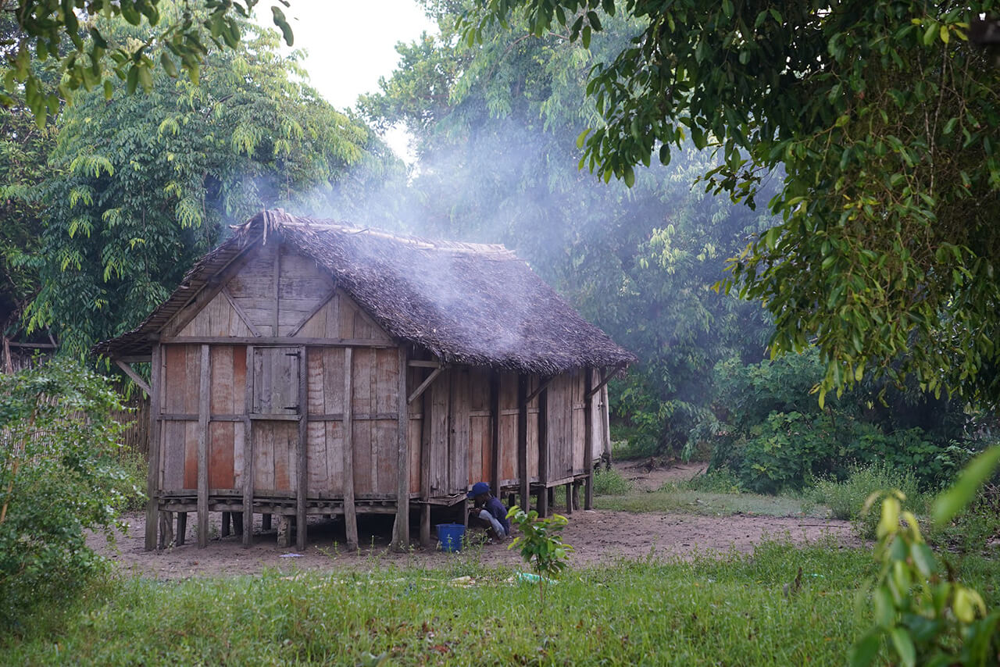
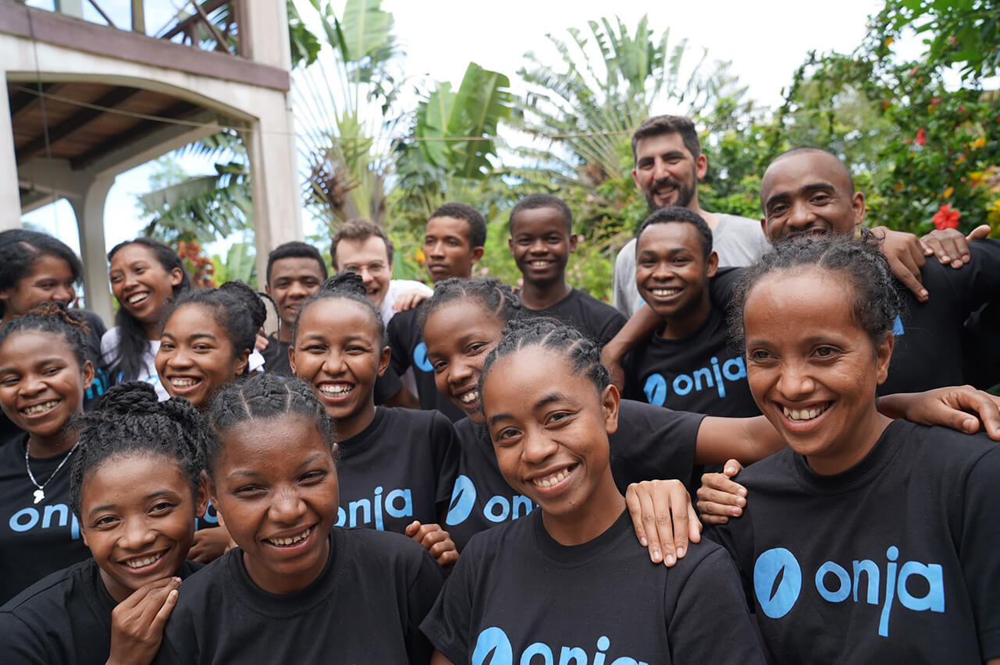

A student's backstory
The school is both a home and learning centre for our 20 students. They come from all over Madagascar and so represent many different cultural groups within Madagascar. Besides all speaking Malagasy, the only other obvious similiarities they have are in their economic power as individuals.
Onja selected these students (with the government's help) explicitly because their opportunities are slim. But their drive is high, and their minds are afire with possibilities.
For most of the students, their life might have be defined by something like finally getting that teaching job, and settling into a life around that. Or maybe it would be to inherit the family shop from their parents, or tend to the farm their family has maintained for generations.

While such pursuits are worthy pursuits, you can see the students eyes light up when you talk about working with computers, and the opportunities they afford. Each student is here at Onja, because they see a bright future.
The concerns of their family
Family life is integral in Madagascar. Your role in the family is mostly expressed by your gender, and your age. The oldest boy has allocated duties in daily life, but they're also treated with the most respect, compared to their siblings. The eldest child is expected to be a good leader, and set a good example.
Women too have their roles defined, but they're sadly not appreciated as much as male children. Two thirds of our students are women. When I think of the typically white male IT demographic, I'm really glad that we can address the imbalance here at the school. But also how well it ties in with the model that if you empower a woman, you empower a community. It feels great to be a contributor towards that movement. At some point though, we'll need to offer guidance to our students about the gender imbalance in tech.
Back to the family effects, you would think that for a student to leave their family for 2 years would be a big commitment for the family, maybe even an economic loss. Sam pointed out that in reality, the opposite is true. Our students have been encouraged by their parents to take this opportunity, mostly because they want the best for their children, but also, Onja provides all the tuition at no cost to their families, with the prospect of gainful employment at rates much better than they typically could earn.
Most families would find it extremely taxing to send their children away to a centre of learning, pay for accommodation there, and give their children the education they need to pursue the jobs they want. Now they have a chance to do what they really want to do, and it's shown just how well the students have progressed over the last year.
Progress
Last year, the student's had third-language-level intorductions to English before they arrived at Onja. This year, they're almost C1-capable English speakers. We only speak English at Onja, so that they have an environment to practice.

It's been two weeks since I arrived, and the students are mostly done with their 5-week Basic IT course now. They're making their donated laptops their own, fleshing out their Slack profiles, and getting to grips with emails and registrations for web services.
Next week we start the first major semester in Front-end development, the students are apprehensive about the work-load, but looking forward to learning more about what it means to become Web Developers.